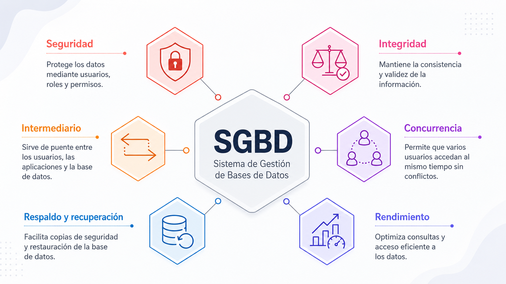

Todo sistema de información que un desarrollador construye una aplicación web, un sistema de inventario, una red social o un
aplicativo móvil necesita, en algún momento, almacenar y recuperar datos de manera confiable. Antes de aprender a
diseñar o consultar una base de datos, es indispensable comprender con precisión cuatro conceptos que se usan constantemente
en el mundo del desarrollo de software: dato, información, base de datos y Sistema Gestor de Bases de Datos (SGBD).
Aunque en el lenguaje cotidiano suelen usarse como sinónimos, en el contexto técnico cada uno tiene un significado específico y una
función distinta dentro de la arquitectura de un sistema.
✨ Comprender estas diferencias no es un ejercicio meramente teórico de ello depende que el futuro
tecnólogo en desarrollo de software, tomes decisiones acertadas sobre qué información almacenar, cómo estructurarla y
qué herramienta tecnológica utilizar para gestionarla. Este tema es la puerta de entrada al resto del curso, ya que todos los
conceptos posteriores (modelo entidad-relación, normalización, SQL) se construyen sobre esta base conceptual.
Objetivos de aprendizaje
🧠Diferenciar los conceptos de dato, información, base de datos y Sistema Gestor de Bases de Datos (SGBD),
reconociendo la relación funcional entre ellos.
🔍Identificar el papel de cada uno de estos conceptos dentro del ciclo de vida del desarrollo de software.
📝Reconocer ejemplos de SGBD utilizados actualmente en la industria del desarrollo de aplicaciones.
Desarrollo del contenido
En el desarrollo de software, esta distinción es constante los formularios capturan datos (lo que el usuario escribe en
cada campo), y el sistema, mediante su lógica de negocio, transforma esos datos en información significativa para el
usuario final, por ejemplo, un reporte de ventas o un historial de pedidos.
Un dato es la unidad más básica y objetiva de representación de un hecho, un número, un texto, una fecha o un
valor aislado que, por sí solo, no tiene un significado completo. Por ejemplo, el valor “19” o el texto “Pedro”
son datos: existen, pero no comunican nada por sí mismos si no se sabe a qué corresponden.
La información es el resultado de procesar, organizar y contextualizar datos para que adquieran significado y utilidad.
Por ejemplo, si se sabe que el valor “19” corresponde a la edad de un usuario llamado “Pedro”, entonces se tiene información:
“Pedro tiene 19 años”. La información permite tomar decisiones y comprender mejor la realidad, mientras que los datos son
simplemente hechos aislados.
✨ Además, es importante reconocer que los datos pueden clasificarse según su grado de organización. Los datos
estructurados son aquellos que siguen un formato fijo y predecible, como los campos de una tabla (nombre, edad,
correo electrónico); los datos semiestructurados poseen cierta organización, pero no un esquema rígido, como un
archivo JSON o XML y los datos no estructurados carecen de un formato predefinido, como una imagen, un audio o
un texto libre. Esta clasificación es relevante porque, más adelante en el curso, aprenderás que las bases de
datos relacionales están pensadas principalmente para gestionar datos estructurados.
Una base de datos es un conjunto organizado y estructurado de datos relacionados entre sí, que se almacena de
forma persistente en un medio digital y que puede ser consultado, actualizado y gestionado de manera eficiente.
A diferencia de un simple archivo de texto o una hoja de cálculo, una base de datos está diseñada para evitar
redundancia, mantener la integridad de la información y permitir el acceso simultáneo de múltiples usuarios o procesos.
Aspecto
Sistema de archivos tradicional
Base de datos
Definición
Archivos planos independientes, gestionados directamente por cada programa
Conjunto organizado y estructurado de datos relacionados entre sí
Almacenamiento
Disperso en archivos separados por programa
Centralizado, persistente en medio digital
Redundancia
Alta — la misma información se repite en varios archivos
Baja — diseñada para evitarla
Consistencia
Propensa a inconsistencias (un dato se actualiza en un archivo pero no en otro)
Mantiene la integridad de la información
Acceso concurrente
Sin mecanismos adecuados para múltiples usuarios/procesos
Permite acceso simultáneo de múltiples usuarios o procesos
Compartir información entre programas
Difícil
Facilitado por la gestión centralizada
Seguridad / control de acceso
Prácticamente ausente
Incluye mecanismos de gestión y control
Gestión
Cada programa gestiona sus propios archivos
Delegada a un software especializado (SGBD)
✨ Por ejemplo, en una aplicación de comercio electrónico, la base de datos almacena de forma organizada la
información de los clientes, los productos, los pedidos y los pagos, de manera que cada uno de estos conjuntos
de datos pueda relacionarse entre sí sin duplicar información innecesariamente.
Piensa en el proyecto de software que te gustaría desarrollar en un futuro (una app, un sistema web, un videojuego, etc.).
Escribe una lista de al menos cuatro “conjuntos de datos” que dicho sistema necesitaría almacenar en una base de datos
(por ejemplo: usuarios, productos, transacciones). No es necesario diseñar tablas todavía, solo identificar qué información
se debería guardar. Adicionalmente, describe un problema que podría presentarse si esa información se manejara en
archivos de Excel independientes en lugar de una base de datos.
Un Sistema Gestor de Bases de Datos (SGBD), conocido en inglés como DBMS (Database Management System), es el software especializado
que permite crear, administrar, consultar y proteger una base de datos.
El SGBD actúa como intermediario entre el usuario o la aplicación
y los datos físicamente almacenados, ofreciendo mecanismos para garantizar la seguridad, la integridad, la concurrencia y el rendimiento
en el acceso a la información. En otras palabras, ninguna aplicación accede “directamente” a los archivos donde reposan los datos
siempre lo hace a través del SGBD, que traduce las solicitudes del programa (generalmente escritas en SQL) en operaciones sobre el
almacenamiento físico.
Dado que este es uno de los conceptos más importantes del curso, a continuación, profundizaremos en sus funciones, su arquitectura,
los tipos de SGBD que existen y quiénes lo utilizan dentro de una organización.
Un SGBD no es simplemente un lugar donde se guardan datos es un software que cumple funciones muy específicas para garantizar que la información sea confiable, segura y esté siempre disponible. Las funciones más relevantes son:
Definición de datos:
Permite crear y modificar la estructura de la base de datos (tablas, tipos de datos, relaciones) mediante un lenguaje de definición de datos (DDL).
Manipulación de datos:
Permite insertar, consultar, actualizar y eliminar información mediante un lenguaje de manipulación de datos (DML), como SQL.
Control de acceso y seguridad:
Gestiona que múltiples usuarios o procesos puedan leer y escribir datos al mismo tiempo sin generar inconsistencias o pérdida de información.
Seguridad y control de acceso:
Define qué usuarios pueden ver o modificar determinada información, mediante permisos y roles.
Integridad de los datos:
Aplica reglas y restricciones (como llaves primarias o valores obligatorios) para evitar datos incorrectos o inconsistentes.
Respaldo y recuperación:
permite generar copias de seguridad y restaurar la información en caso de fallas del sistema, errores humanos o desastres.
Independencia de los datos:
Permite que los cambios en la estructura física de almacenamiento no afecten directamente a las aplicaciones que consultan la información.

Para lograr la independencia de los datos mencionada anteriormente, la mayoría de los SGBD se basan en la arquitectura de tres niveles propuesta por el estándar ANSI/SPARC, la cual organiza la base de datos en tres capas o niveles de abstracción.
Nivel interno (o físico):
describe cómo se almacenan realmente los datos en el disco: archivos, índices, estructuras de almacenamiento. Es el nivel más
cercano al hardware.
Nivel conceptual (o lógico):
Describe qué datos se almacenan y qué relaciones existen entre ellos, sin entrar en detalles de cómo se almacenan físicamente.
Es el nivel en el que trabajaremos principalmente durante este curso, mediante el modelo entidad-relación y el modelo relacional.
Nivel externo (o de vista del usuario):
Describe cómo cada grupo de usuarios o aplicación específica “ve” una parte de la base de datos, de acuerdo con sus necesidades
(por ejemplo, un cajero solo ve la información de ventas, no la de nómina).
No todos los SGBD organizan la información de la misma manera. Según el modelo de datos que utilizan para estructurar la información, se pueden clasificar en .
SGBD relacionales (RDBMS):
Organizan la información en tablas compuestas por filas y columnas, relacionadas entre sí mediante llaves. Son el enfoque que
estudiaremos a profundidad en este curso. Ejemplos: MySQL, PostgreSQL, Oracle Database, Microsoft SQL Server.
SGBD NoSQL (“Not only SQL”):
Surgieron para manejar grandes volúmenes de datos y estructuras más flexibles. Se dividen a su vez en varios subtipos documentales
(almacenan documentos tipo JSON, ejemplo: MongoDB), clave-valor (almacenan pares simples de clave y valor, ejemplo: Redis), columnares
(optimizados para grandes volúmenes analíticos, ejemplo: Cassandra) y de grafos (representan datos como nodos y relaciones, ejemplo: Neo4j).
SGBD jerárquicos y de red:
Modelos más antiguos, hoy en desuso en nuevos desarrollos, que organizaban los datos en estructuras
de árbol o de red. Se mencionan por su valor histórico, ya que fueron el antecedente directo del modelo relacional.
Actividades prácticas
Sopa de Letras: Bases de Datos y SGBD
Arrastra el mouse sobre las letras (horizontal, vertical o diagonal) para encontrar las palabras.
Palabras a encontrar
Relaciona los Conceptos
Selecciona un concepto de la izquierda y luego su definición correcta a la derecha. Si aciertan, se conectan en verde; si no, se indicará que no coinciden.
Evaluación
Responde las 10 preguntas y presiona "Enviar respuestas" para ver tu retroalimentación.
Recursos para profundizar
Para ampliar tu conocimiento sobre ecuaciones y
desigualdades, te recomendamos explorar los siguientes enlaces y documentos: